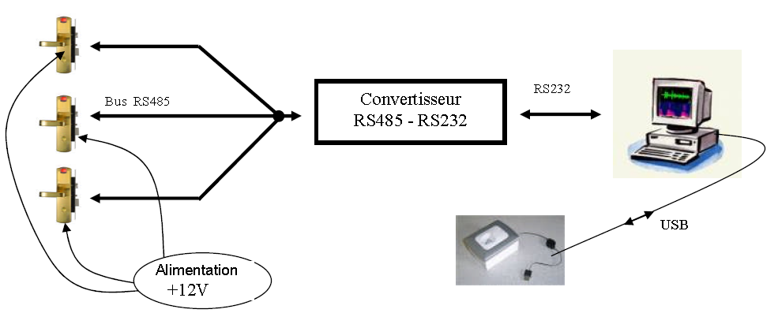
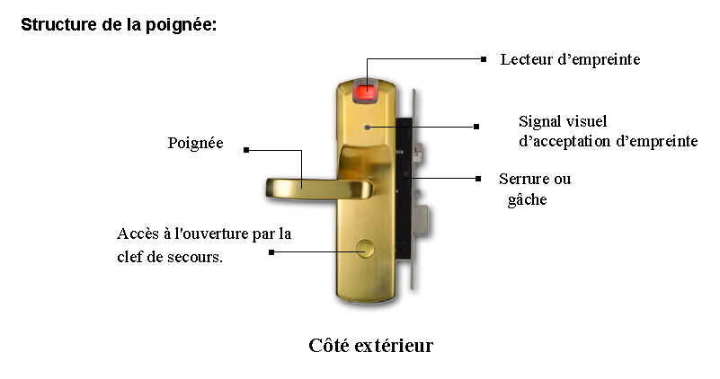

Mise en situation
La société SHOGUN, où travaillent cent soixante neuf personnes, est spécialisée dans la conception et la fabrication d’articles de pêche haut de gamme (canne au coup, lancer léger, canne à manier et canne à mouche).
Il y a deux ans, elle a remplacé les serrures à clés des portes d’entrées (n°1 à 12) de la société par un système de gestion d’accès par poignées biométriques, ce qui lui permet de faire de réelles économies au niveau de la gestion des clés d’accès aux bâtiments (clés oubliées, perdues, cassées ou encore usées, …) .
Fort de ce succès, elle équipe leur nouveau magasin de stockage (bâtiment N°3) de poignées biométriques pour en limiter l’accès à certaines personnes. Ce nouveau bâtiment est équipé de deux poignées biométriques une pour la porte (n°13) de devant et une pour la porte (n°14) de derrière. Après réorganisation des services, Il permettra l’embauche de deux nouveaux magasiniers et d’un cariste.
Configuration matérielle du système
Le système gestion d’accès par poignée biométrique est composé :
De poignées biométriques constituées d’un lecteur d’empreinte, un mécanisme de serrure électrique avec un système d’ouverture de secours à clé.
Un lecteur biométrique destiné à l’enregistrement des empreintes sur port USB.
Un bloc d’alimentation 12V DC pour les poignées biométriques.
Une interface série RS232/RS485 pour transférer les données vers les poignées biométriques.
Un ordinateur pour gérer les autorisations d’accès.
Analyse fonctionnelle du système technique


Fonctionnement
Les empreintes digitales autorisées doivent préalablement être mémorisées (enrôlement).
En veille, la rotation de la poignée extérieure fonctionne à vide et n'entraîne pas la rentrée du pêne, donc la porte ne peut pas être ouverte.
Lorsqu'un doigt est posé sur le capteur, l'empreinte est lue. Si cette empreinte correspond à une des empreintes mémorisées (authentification), un moteur électrique établit une liaison mécanique dans la chaîne cinématique entre la poignée extérieure et le pêne : la porte peut alors être ouverte
Video fonctionnement en veille
Video fonctionnement ouverture autorisée
Created with the Personal Edition of HelpNDoc: Free CHM Help documentation generator